世田谷七福神/東京都世田谷区
世田谷にセルフメイド系の神社？があると聞き、行ってみた。
小田急線経堂の駅から商店街をだらだらと歩いて行くと、交差点の辺りに見えて来ました。件の物件が。
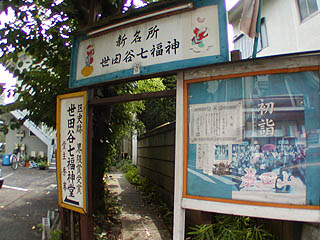
「新名所」「界隈賞受賞」という魅力的なキャッチコピーが並び、嫌でも期待が高まってくる。
勇んで乗り込んでみると路地の先は雑草が生い茂っていて先に進めない状態。
このままでは泥棒と間違われそうなので、改めて看板のところに戻ると、あっ、矢印がしてあるじゃん。ここから入るんじゃあないのね。
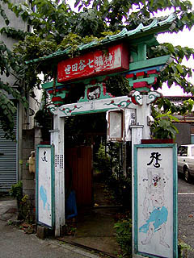
で、矢印に従いあらためて住宅街の隙間にあるような門に辿り着く。
世田谷七福神と額が掲げられた門はパステルグリーンと赤と白に塗り分けられている。そのセンスオブカラーにまず驚愕、そして脱帽。
蛙股（「世田谷七福神」という赤い額の下の部分）には眠り猫の彫刻が施されていて目標！現代の左甚五郎！ってな感じなんでしょうか。
門の左右にはペンキ描きの仁王様、門を潜るとこれまた七福神が描かれている。その画風からしてこの先の七福神堂に嫌が応にも期待は高まる。
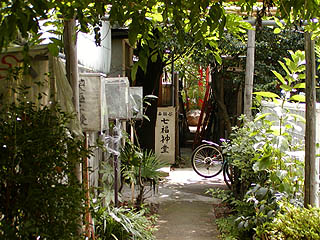
・・・と、門を潜り先を見ると、極めて普通〜の路地になってしまった。
正直言って、えっ、ここ入ってちゃっていいの？的な雰囲気の思いっきりの生活路地だ。
丁度そこへバイクに乗ったお兄ちゃんが来たので聞いてみたら七福神堂はこの先にあるとの事。
お兄ちゃんは左手のアパートの住人だったようだ。
どうも、一回進路を阻まれているから疑心暗鬼になっている。
で、路地を突き当たると思いっきり民家の庭先に出る。えっ！これ人の家じゃないですか。
で、七福神は？
と思って振り返ったらすぐ目の前にありました。
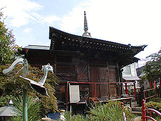
何故この七福神堂が目に入らなかったかといえば実は、今通って来たところもメインの入口じゃあなくて裏路だったのだ。
まさかお堂の裏に突き当たるとは思わなかったのと他の建物が入り組んでいて視界が狭かったので見当たらなかったという次第。
しかも民家の庭先にあるとは思いもしなかったので・・・
そんなこんなでやっと七福神堂に辿り着いた。すみませんくどくどと書いてしまって。
せっかくだから正面のメインの入口からアプローチしてみよう。
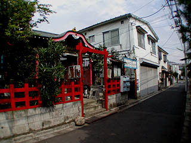 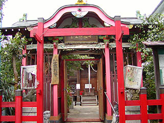
正面のメイン入口は住宅街の中の裏通りに面している。
つまり一番目立つ入口は通れなくて二番目に目立つ入口は裏道で、三番目に目に付く入口がメイン、という摩訶不思議な配置になっているのである。
実際、メイン入口は住宅地の中にあるので恐らくほとんどの人がこのメインの入口は使用しないのではないかと思われる。
で、またまた改めてメインの入口からアプローチ開始。こちらには立派な門がありその奥に七福神堂の正面が見える。
まるでロールプレイングゲームで散々苦労して入口を見つけたのに、別の通路を使えばいとも簡単にたどり着けたのを知った時のような徒労感を覚えつつ、門を潜る。
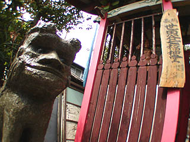 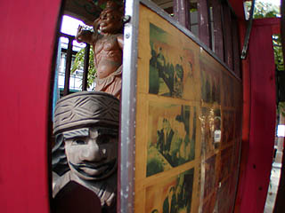
山門には仁王像があり、その周辺には手作り感あふれまくる彫刻物が点在している。
特に門前の狛犬は強烈だった。鼻が人間の鼻だもの。
門の隙間からニポポが覗いてたりする。
そういえばニポポとか鮭をくわえた木彫りの熊とか最近見ないですね。あと、でかい王将の駒とか水飲み鳥とか・・・
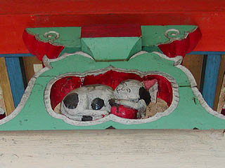 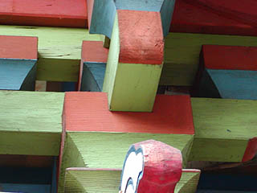
門は裏門同様、カラフルに塗り分けられている。もちろんこちらの門にも眠り猫が。
「俺、左甚五郎！」宣言とお見受け致したところで辺りを見回す。
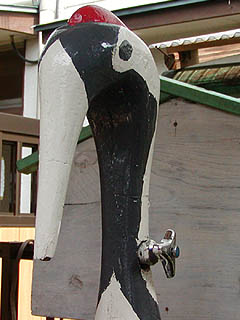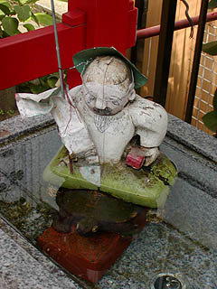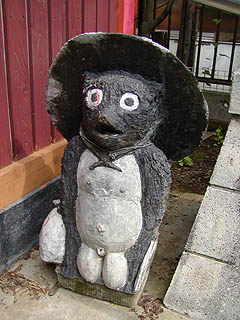
境内に渦巻くセルフメイド魂炸裂の素晴らしき彫刻群。
ちなみに左の鶴の口からは水が出ます。で、その水鉢の中にいるのが浦島太郎（だと思うんですけど・・・）。鶴亀で目出たいってことなんでしょう。
その左甚五郎魂と現実のギャップとでもいうんでしょうか。その前のめりな感じがたまらなくセルフメイド感を高めている。
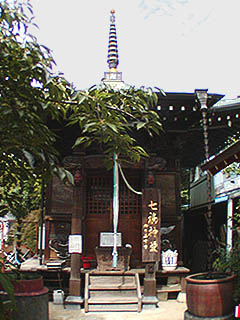 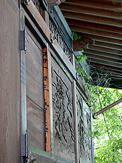
七福神堂は遠目に見れば極めて真っ当な感じの建物である。中を覗いたがこちらもごくごく普通のお堂だった。
しかし柱を見ると字が書かれていて明らかに廃材を使用したものとわかる。
恐らくこの七福神堂や門の作者は宮大工さんか何かだったのだろう。
自分で廃材を集めてお堂や門を作り、ついでに狛犬やタヌキや鶴まで作ってしまったのだろうが、建物は出来るのだが彫刻は得意ではなく、このようなアンバランスな景観が出現したものと思われる。
素晴らしき蛇足根性。これぞ珍寺の王道なり。しかも自宅の庭に作るの基本〜。
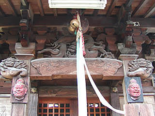
上の彫刻は恐らく自作のものではないだろう。
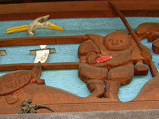
だって、自作の彫刻はこんなんですから。
軒下に一枚の賞状が掲げられている。みれば第二回せたがや界隈賞とある。以下受賞文
あなたは長年培われた技術と営々たる努力によって独力で自宅の庭先に七福神堂を建てられました 小規模ながらほのぼのとした雰囲気が周辺に広がり区民の人気を集めております 手作りによる界隈形成への意欲と努力をここに賞します
気が付くと母屋の方から「あ、あのお〜、ゆうっくりと おまいり ください ねええ〜〜〜」との声。
声の主はこの七福神堂の作者の佐久間翁であった。
やはり廃材を集めて自分で作ったとの事。
ごくごく普通の住宅街に華開くセルフメイドの牙城、おみそれいたしました。
七福神よりも翁に手を合わせたい気分だった。
2003.８.
情報提供は小室素子さんです
追記
無くなっちゃいました。
2009.12.
珍寺大道場 HOME